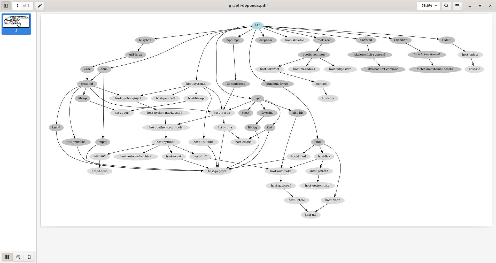

23. System integration
23.1 Objectives
- Get familiar with the
systemdinit system.
Compared to the previous lab, we go on increasing the complexity of the system, this time by using the systemd init system, and by taking advantage of it to add a few extra features, in particular ones that will be useful for debugging in the next lab.
23.2 Setup
Since systemd requires the GNU C library, we are going to make a new Buildroot build in a new working directory, and using a different cross-compiling toolchain.
So, create the $HOME/embedded-linux-bbb-labs/integration/ directory and go inside of it.
Make a new clone of Buildroot from the existing local git repository, and checkout our embedded-linux-bbb branch:
23.3 Root filesystem overlay
Remove etc/init.d/ from the root filesystem overlay, because it was for BusyBox, not systemd.
23.4 Buildroot configuration
Let's make a new Buildroot configuration from scratch.
In Target options:
-
Target Architecture=ARM (little endian). -
Target Architecture Variant=cortex-A8. -
Target ABI=EABIhf. -
Floating point strategy=VFPv3-D16.
In Toolchain:
-
Toolchain type=External toolchain. -
Toolchain=Bootlin toolchains.
This time, we will use a Bootlin ready-made toolchain forglibc, as this is necessary for using systemd. -
Toolchain origin=Toolchain to be downloaded and installed. -
Bootlin toolchain variant=armv7-eabihf glibc bleeding-edge 2021.11-1. -
Enable
Copy gdb server to the Target.
In System configuration:
-
Init system=systemd. -
Root filesystem overlay directories=board/bootlin/training/rootfs-overlay.
In Kernel:
-
Enable
Linux Kernel. -
Kernel version=Latest version (5.15). -
Custom kernel patches=board/bootlin/training/0001-Custom-DTS-for-Bootlin-lab.patch. -
Kernel configuration=Using a custom (def)config file. -
Configuration file path=board/bootlin/training/linux.config. -
Enable
Build a Device Tree Blob (DTB). -
In-tree Device Tree Source file names=am335x-boneblack-custom.
In Target packages:
-
Audio and video applications:-
Enable
mpd, and in the submenu:- Keep only
alsa,vorbis, andtcp sockets.
- Keep only
-
Enable
mpd-mpc.
-
-
Hardware handling:- Enable
nunchuk driver.
- Enable
-
Networking applications:- Enable
dropbear, a lightweight SSH server used instead of OpenSSH in most embedded devices.
Disableclient programs, which are not needed.
- Enable
In Filesystem images:
- Enable
tar the root filesystem.
23.5 Build and test
Now build the full system.
Once the build is over, generate the dependency graph again and find out the new dependencies introduced by using systemd.
$ make graph-depends
...
$ evince output/graphs/graph-depends.pdf
$ cp output/graphs/graph-depends.pdf ../graph-depends.pdf

To test the new system, create a new nfsroot directory, extract then new root filesystem into it, and boot your board on it through NFS.
$ cd "$LAB_PATH/buildroot/"
$ cp output/images/zImage /srv/tftp/
$ mkdir -p "$LAB_PATH/nfsroot/"
$ cd "$LAB_PATH/nfsroot/"
$ tar xfv "../buildroot/output/images/rootfs.tar"
$ sudo rm -f /srv/nfs
$ sudo ln -snv "$LAB_PATH/nfsroot/" /srv/nfs
'/srv/nfs' -> '/home/me/embedded-linux-bbb-labs/integration/nfsroot/'
$ sudo chown -R tftp:tftp /srv/nfs
$ sudo exportfs -ar
$ sudo systemctl restart nfs-kernel-server
You should see the system booting through systemd, with all the systemd targets and system services starting one by one, with a total boot time which looks slower than before.
That's because the system configuration is more complex, but also more versatile, being ready to run more complex services and applications.
You can ask systemd to show you the various running services:
# systemctl status
●
State: degraded
Jobs: 0 queued
Failed: 1 units
Since: Thu 1970-01-01 00:00:13 UTC; 52 years 0 months ago
CGroup: /
├─init.scope
│ └─1 /sbin/init
└─system.slice
├─dbus.service
│ └─165 /usr/bin/dbus-daemon --system --address=systemd: --no
├─dropbear.service
│ └─171 /usr/sbin/dropbear -F -R
├─mpd.service
│ └─167 /usr/bin/mpd --systemd
├─system-serial\x2dgetty.slice
│ └─serial-getty@ttyS0.service
│ ├─168 -sh
│ ├─185 systemctl status
│ └─186 less
├─systemd-journald.service
│ └─92 /usr/lib/systemd/systemd-journald
├─systemd-networkd.service
│ └─113 /usr/lib/systemd/systemd-networkd
├─systemd-resolved.service
│ └─130 /usr/lib/systemd/systemd-resolved
├─systemd-timesyncd.service
│ └─129 /usr/lib/systemd/systemd-timesyncd
└─systemd-udevd.service
└─104 /usr/lib/systemd/systemd-udevd
~
standard input lines 10-30/30 (END)
You can also check all the mounted filesystems and be impressed:
# mount
192.168.0.15:/srv/nfs on / type nfs (rw,relatime,vers=3,rsize=4096,wsize=4096,namlen=255,hard,nolock,proto=tcp,timeo=600,retrans=2,sec=sys,mountaddr=192.168.0.15,mountvers=3,mountproto=tcp,local_lock=all,addr=192.168.0.15)
devtmpfs on /dev type devtmpfs (rw,relatime,size=242424k,nr_inodes=60606,mode=755)
proc on /proc type proc (rw,nosuid,nodev,noexec,relatime)
sysfs on /sys type sysfs (rw,nosuid,nodev,noexec,relatime)
tmpfs on /dev/shm type tmpfs (rw,nosuid,nodev)
devpts on /dev/pts type devpts (rw,nosuid,noexec,relatime,gid=5,mode=620,ptmxmode=000)
tmpfs on /run type tmpfs (rw,nosuid,nodev,size=100452k,nr_inodes=819200,mode=755)
cgroup2 on /sys/fs/cgroup type cgroup2 (rw,nosuid,nodev,noexec,relatime,nsdelegate,memory_recursiveprot)
mqueue on /dev/mqueue type mqueue (rw,nosuid,nodev,noexec,relatime)
debugfs on /sys/kernel/debug type debugfs (rw,nosuid,nodev,noexec,relatime)
tracefs on /sys/kernel/tracing type tracefs (rw,nosuid,nodev,noexec,relatime)
tmpfs on /tmp type tmpfs (rw,nosuid,nodev,nr_inodes=1048576)
configfs on /sys/kernel/config type configfs (rw,nosuid,nodev,noexec,relatime)
23.6 Inspecting the system
On the target, look at the contents of /lib/systemd/.
You will see the implementation of most systemd targets and services.
# ls -p /lib/systemd/
libsystemd-shared-250.so systemd-pstore
network/ systemd-remount-fs
ntp-units.d/ systemd-reply-password
resolv.conf systemd-resolved
system/ systemd-shutdown
system-generators/ systemd-sleep
system-preset/ systemd-socket-proxyd
system-shutdown/ systemd-sulogin-shell
system-sleep/ systemd-sysctl
systemd systemd-time-wait-sync
systemd-ac-power systemd-timedated
systemd-boot-check-no-failures systemd-timesyncd
systemd-cgroups-agent systemd-udevd
systemd-fsck systemd-update-done
systemd-growfs systemd-update-helper
systemd-hostnamed systemd-vconsole-setup
systemd-journald systemd-xdg-autostart-condition
systemd-makefs user/
systemd-modules-load user-environment-generators/
systemd-network-generator user-generators/
systemd-networkd user-preset/
systemd-networkd-wait-online
In particular, check out /lib/systemd/user/, containing some unnecessary targets in our case, such as bluetooth.target.
# ls /lib/systemd/user/
app.slice session.slice
background.slice shutdown.target
basic.target smartcard.target
bluetooth.target sockets.target
default.target sound.target
exit.target systemd-exit.service
graphical-session-pre.target systemd-tmpfiles-clean.service
graphical-session.target systemd-tmpfiles-clean.timer
mpd.service systemd-tmpfiles-setup.service
mpd.socket timers.target
paths.target xdg-desktop-autostart.target
printer.target
However, check the mpd.service file for our MPD server.
This should help you to realize all the options provided by systemd to start and control system services, while keeping the system secure, and their resources under control.
You won't be able to match this level of control and security in a hand-made system.
[Unit]
Description=Music Player Daemon
Documentation=man:mpd(1) man:mpd.conf(5)
After=network.target sound.target
[Service]
Type=notify
ExecStart=/usr/bin/mpd --systemd
# Enable this setting to ask systemd to watch over MPD, see
# systemd.service(5). This is disabled by default because it causes
# periodic wakeups which are unnecessary if MPD is not playing.
#WatchdogSec=120
# allow MPD to use real-time priority 40
LimitRTPRIO=40
LimitRTTIME=infinity
# for io_uring
LimitMEMLOCK=64M
# disallow writing to /usr, /bin, /sbin, ...
ProtectSystem=yes
# more paranoid security settings
NoNewPrivileges=yes
ProtectKernelTunables=yes
ProtectControlGroups=yes
# AF_NETLINK is required by libsmbclient, or it will exit() .. *sigh*
RestrictAddressFamilies=AF_INET AF_INET6 AF_UNIX AF_NETLINK
RestrictNamespaces=yes
# Note that "ProtectKernelModules=yes" is missing in the user unit
# because systemd 232 is unable to reduce its own capabilities
# ("Failed at step CAPABILITIES spawning /usr/bin/mpd: Operation not
# permitted")
[Install]
WantedBy=default.target
23.7 Automatic module loading
Check the currently loaded modules on your system.
# lsmod
Module Size Used by
input_leds 16384 0
hid_generic 16384 0
snd_usb_audio 217088 0
snd_hwdep 16384 1 snd_usb_audio
snd_usbmidi_lib 28672 1 snd_usb_audio
mc 36864 1 snd_usb_audio
snd_rawmidi 28672 1 snd_usbmidi_lib
usbhid 32768 0
joydev 20480 0
snd_soc_hdmi_codec 16384 1
snd_soc_simple_card 16384 0
snd_soc_simple_card_utils 20480 1 snd_soc_simple_card
omap_aes_driver 24576 0
pm33xx 16384 0
omap_crypto 16384 1 omap_aes_driver
omap_sham 28672 0
libaes 16384 1 omap_aes_driver
ti_emif_sram 16384 1 pm33xx
crypto_engine 16384 2 omap_aes_driver,omap_sham
snd_soc_davinci_mcasp 28672 2
snd_soc_ti_udma 16384 1 snd_soc_davinci_mcasp
snd_soc_ti_edma 16384 1 snd_soc_davinci_mcasp
snd_soc_ti_sdma 16384 1 snd_soc_davinci_mcasp
tilcdc 32768 0
snd_soc_core 172032 7 snd_soc_davinci_mcasp,snd_soc_hdmi_codec,snd_soc_simple_card_utils,snd_soc_ti_sdma,snd_soc_ti_edma,snd_soc_ti_udma,snd_soc_simple_card
snd_pcm_dmaengine 16384 1 snd_soc_core
snd_pcm 106496 5 snd_soc_davinci_mcasp,snd_usb_audio,snd_pcm_dmaengine,snd_soc_hdmi_codec,snd_soc_core
snd_timer 28672 1 snd_pcm
snd 61440 8 snd_hwdep,snd_usb_audio,snd_soc_hdmi_codec,snd_timer,snd_rawmidi,snd_usbmidi_lib,snd_soc_core,snd_pcm
soundcore 16384 1 snd
nunchuk 16384 0
omap_mailbox 20480 1
tda998x 28672 0
drm_kms_helper 192512 3 tda998x,tilcdc
cfbfillrect 16384 1 drm_kms_helper
syscopyarea 16384 1 drm_kms_helper
rtc_omap 20480 2 pm33xx
cfbimgblt 16384 1 drm_kms_helper
sysfillrect 16384 1 drm_kms_helper
omap_wdt 16384 0
sysimgblt 16384 1 drm_kms_helper
fb_sys_fops 16384 1 drm_kms_helper
watchdog 20480 1 omap_wdt
wkup_m3_ipc 16384 1 pm33xx
cfbcopyarea 16384 1 drm_kms_helper
tps65218_pwrbutton 16384 0
drm 385024 4 tda998x,tilcdc,drm_kms_helper
drm_panel_orientation_quirks 16384 1 drm
at24 20480 0
wkup_m3_rproc 16384 1
cpufreq_dt 16384 0
sha256_generic 16384 0
libsha256 16384 1 sha256_generic
sha256_arm 24576 0
cfg80211 643072 0
Surprise: both the Nunchuk and USB audio modules are already loaded.
We didn't have anything to set up and systemd automatically load the modules associated to connected hardware.
Let's find out why.
On the target, go to /lib/udev/rules.d/.
You will find all the standard rules for Udev, the part of systemd which handles hardware events, takes care of the permissions and ownership of device files, notifies other userspace programs, and among others, loads kernel modules.
# ls /lib/udev/rules.d/
50-udev-default.rules 64-btrfs.rules
60-autosuspend.rules 70-camera.rules
60-block.rules 70-joystick.rules
60-cdrom_id.rules 70-memory.rules
60-drm.rules 70-mouse.rules
60-evdev.rules 70-touchpad.rules
60-fido-id.rules 75-net-description.rules
60-input-id.rules 75-probe_mtd.rules
60-persistent-alsa.rules 78-sound-card.rules
60-persistent-input.rules 80-drivers.rules
60-persistent-storage-tape.rules 80-net-setup-link.rules
60-persistent-storage.rules 81-net-dhcp.rules
60-persistent-v4l.rules 90-vconsole.rules
60-sensor.rules 99-systemd.rules
60-serial.rules README
Open 80-drivers.rules, which is the rule allowing Udev to load kernel modules for detected devices.
Its most important line defines MODALIAS:
# do not edit this file, it will be overwritten on update
ACTION!="add", GOTO="drivers_end"
ENV{MODALIAS}=="?*", RUN{builtin}+="kmod load '$env{MODALIAS}'"
SUBSYSTEM=="tifm", ENV{TIFM_CARD_TYPE}=="SD", RUN{builtin}+="kmod load tifm_sd"
SUBSYSTEM=="tifm", ENV{TIFM_CARD_TYPE}=="MS", RUN{builtin}+="kmod load tifm_ms"
SUBSYSTEM=="memstick", RUN{builtin}+="kmod load ms_block mspro_block"
SUBSYSTEM=="i2o", RUN{builtin}+="kmod load i2o_block"
SUBSYSTEM=="module", KERNEL=="parport_pc", RUN{builtin}+="kmod load ppdev"
KERNEL=="mtd*ro", ENV{MTD_FTL}=="smartmedia", RUN{builtin}+="kmod load sm_ftl"
LABEL="drivers_end"
This is when the modules.alias file comes into play.
When a new device is found, the kernel passes a MODALIAS environment variable to Udev, containing which bus this happened on, and the attributes of the device on this bus.
Thanks to the module aliases, the right module gets loaded.
We already explained that in the lectures when talking about the output of make modules_install.
Find where the modules.alias file is located, and you will find the two lines that allowed to load
our snd_usb_audio and nunchuk modules:
# modules_alias_path=$(find / -name modules.alias)
# echo $modules_alias_path
/usr/lib/modules/5.15.26/modules.alias
# cat $modules_alias_path | grep snd_usb_audio
...
alias usb:v*p*d*dc*dsc*dp*ic01isc01ip*in* snd_usb_audio
alias usb:v046Dp0A38d*dc*dsc*dp*ic*isc*ip*in* snd_usb_audio
...
# cat $modules_alias_path | grep nunchuk
alias of:N*T*Cnintendo,nunchukC* nunchuk
alias of:N*T*Cnintendo,nunchuk nunchuk
For snd_usb_audio, there are many possible matching values, so it isn't straighforward to be
sure which matched your particular device.
However, you can find in sysfs which MODALIAS was emitted for your device:
# cd /sys/class/sound/card0/device/
# ls -la
total 0
drwxr-xr-x 4 root root 0 Jan 18 2022 .
drwxr-xr-x 8 root root 0 Jan 18 2022 ..
-rw-r--r-- 1 root root 4096 May 6 11:15 authorized
-r--r--r-- 1 root root 4096 May 6 11:15 bAlternateSetting
-r--r--r-- 1 root root 4096 May 6 11:15 bInterfaceClass
-r--r--r-- 1 root root 4096 May 6 11:15 bInterfaceNumber
-r--r--r-- 1 root root 4096 May 6 11:15 bInterfaceProtocol
-r--r--r-- 1 root root 4096 May 6 11:15 bInterfaceSubClass
-r--r--r-- 1 root root 4096 May 6 11:15 bNumEndpoints
lrwxrwxrwx 1 root root 0 May 6 11:15 driver -> ../../../../../../../../../bus/usb/drivers/snd-usb-audio
-r--r--r-- 1 root root 4096 May 6 11:15 modalias
drwxr-xr-x 2 root root 0 May 6 11:15 power
drwxr-xr-x 3 root root 0 May 6 11:15 sound
lrwxrwxrwx 1 root root 0 Jan 18 2022 subsystem -> ../../../../../../../../../bus/usb
-r--r--r-- 1 root root 4096 May 6 11:15 supports_autosuspend
-rw-r--r-- 1 root root 4096 Jan 18 2022 uevent
# cat modalias
usb:v046Dp0A38d0115dc00dsc00dp00ic01isc01ip00in00
With a bit of patience, you could find the matching line within the modules.alias file.
If you want to see the information sent to Udev by the kernel when a new device is plugged in, here are a few debugging commands.
First unplug your device and run udevadm monitor.
Then plug in your headset again. You will find all the events emitted by the kernel, and with the same string (with UDEV instead of KERNEL), the time when Udev finished processing each event.
# udevadm monitor
monitor will print the received events for:
UDEV - the event which udev sends out after rule processing
KERNEL - the kernel uevent
[ 1602.288834] usb 1-1: new full-speed USB device number 5 using musb-hdrc
[ 1602.670092] usb 1-1: New USB device found, idVendor=046d, idProduct=0a38, bcdDevice= 1.15
[ 1602.678406] usb 1-1: New USB device strings: Mfr=1, Product=2, SerialNumber=0
[ 1602.685741] usb 1-1: Product: Logitech USB Headset H340
[ 1602.691101] usb 1-1: Manufacturer: Logitech Inc.
KERNEL[1602.716705] add /devices/platform/ocp/47400000.target-module/47401c00.usb/musb-hdrc.1/usb1/1-1 (usb)
KERNEL[1602.722002] add /devices/platform/ocp/47400000.target-module/47401c00.usb/musb-hdrc.1/usb1/1-1/1-1:1.0 (usb)
KERNEL[1602.849792] add /devices/platform/ocp/47400000.target-module/47401c00.usb/musb-hdrc.1/usb1/1-1/1-1:1.0/sound/card0 (sound)
KERNEL[1602.853994] add /devices/platform/ocp/4740[ 1602.870857] PM: Cannot get wkup_m3_ipc handle
0000.target-module/47401c00.usb/musb-hdrc.1/usb1/1-1/1-1:1.0/sound/card0/pcmC0D0p (sound)
KERNEL[1602.858805] add /devices/platform/ocp/47400000.target-module/47401c00.usb/musb-hdrc.1/usb1/1-1/1-1:1.0/sound/card0/pcmC0D0c (sound)
KERNEL[1602.872313] add /devices/platform/ocp/47400000.target-module/47401c00.usb/musb-hdrc.1/usb1/1-1/1-1:1.0/sound/card0/controlC0 (sound)
KERNEL[1602.873192] bind /devices/platform/ocp/47400000.target-module/47401c00.usb/musb-hdrc.1/usb1/1-1/1-1:1.0 (usb)
KERNEL[1602.873919] add /devices/platform/ocp/47400000.target-module/47401c00.usb/musb-hdrc.1/usb1/1-1/1-1:1.1 (usb)
KERNEL[1602.874634] bind /devices/platform/ocp/47400000.target-module/47401c00.usb/musb-hdrc.1/usb1/1-1/1-1:1.1 (usb)
KERNEL[1602.875370] add /devices/platform/ocp/47400000.target-module/47401c00.usb/musb-hdrc.1/usb1/1-1/1-1:1.2 (usb)
KERNEL[1602.876096] bind /devices/platform/ocp/47400000.target-module/47401c00.usb/musb-hdrc.1/usb1/1-1/1-1:1.2 (usb)
KERNEL[1602.876771] add [ 1602.964976] input: Logitech Inc. Logitech USB Headset H340 Consumer Control as /devices/platform/ocp/47400000.target-module/47401c00.usb/musb-hdrc.1/usb1/1-1/1-1:1.3/0003:046D:0A38.0004/input/input7
/devices/platform/ocp/47400000.target-module/47401c00.usb/musb-hdrc.1/usb1/1-1/1-1:1.3 (usb)
KERNEL[1602.949111] add /devices/platform/ocp/47400000.target-module/47401c00.usb/musb-hdrc.1/usb1/1-1/1-1:1.3/0003:046D:0A38.0004 (hid)
KERNEL[1602.980402] add /devices/platform/ocp/47400000.target-module/47401c00.usb/musb-hdrc.1/usb1/1-1/1-1:1.3/0003:046D:0A38.0004/input/input7 (input)
[ 1603.049480] input: Logitech Inc. Logitech USB Headset H340 as /devices/platform/ocp/47400000.target-module/47401c00.usb/musb-hdrc.1/usb1/1-1/1-1:1.3/0003:046D:0A38.0004/input/input8
KERNEL[1603.057724] add /devices/platform/ocp/47400000.target-module/47401c00.usb/musb-hdrc.1/usb1/1-1/1-1:1.3/0003:046D:0A[ 1603.076705] hid-generic 0003:046D:0A38.0004: input,hiddev96: USB HID v1.11 Device [Logitech Inc. Logitech USB Headset H340] on usb-musb-hdrc.1-1/input3
38.0004/input/input7/event1 (input)
KERNEL[1603.058370] add [ 1603.094087] PM: Cannot get wkup_m3_ipc handle
/devices/platform/ocp/47400000.target-module/47401c00.usb/musb-hdrc.1/usb1/1-1/1-1:1.3/0003:046D:0A38.0004/input/input8 (input)
KERNEL[1603.063218] add /devices/platform/ocp/47400000.target-module/47401c00.usb/musb-hdrc.1/usb1/1-1/1-1:1.3/0003:046D:0A38.0004/input/input8/event2 (input)
KERNEL[1603.063593] add /devices/platform/ocp/47400000.target-module/47401c00.usb/musb-hdrc.1/usb1/1-1/1-1:1.3/0003:046D:0A38.0004/input/input8/input8::mute (leds)
KERNEL[1603.063797] add /class/usbmisc (class)
KERNEL[1603.083788] add /devices/platform/ocp/47400000.target-module/47401c00.usb/musb-hdrc.1/usb1/1-1/1-1:1.3/usbmisc/hiddev0 (usbmisc)
KERNEL[1603.084236] bind /devices/platform/ocp/47400000.target-module/47401c00.usb/musb-hdrc.1/usb1/1-1/1-1:1.3/0003:046D:0A38.0004 (hid)
KERNEL[1603.084543] bind /devices/platform/ocp/47400000.target-module/47401c00.usb/musb-hdrc.1/usb1/1-1/1-1:1.3 (usb)
KERNEL[1603.084907] bind /devices/platform/ocp/47400000.target-module/47401c00.usb/musb-hdrc.1/usb1/1-1 (usb)
UDEV [1603.110810] add /devices/platform/ocp/47400000.target-module/47401c00.usb/musb-hdrc.1/usb1/1-1 (usb)
UDEV [1603.118580] add /class/usbmisc (class)
UDEV [1603.129548] add /devices/platform/ocp/47400000.target-module/47401c00.usb/musb-hdrc.1/usb1/1-1/1-1:1.0 (usb)
UDEV [1603.163585] add /devices/platform/ocp/47400000.target-module/47401c00.usb/musb-hdrc.1/usb1/1-1/1-1:1.0/sound/card0 (sound)
UDEV [1603.177859] add /devices/platform/ocp/47400000.target-module/47401c00.usb/musb-hdrc.1/usb1/1-1/1-1:1.0/sound/card0/pcmC0D0c (sound)
UDEV [1603.183681] add /devices/platform/ocp/47400000.target-module/47401c00.usb/musb-hdrc.1/usb1/1-1/1-1:1.0/sound/card0/pcmC0D0p (sound)
UDEV [1603.195790] add /devices/platform/ocp/47400000.target-module/47401c00.usb/musb-hdrc.1/usb1/1-1/1-1:1.2 (usb)
UDEV [1603.203962] add /devices/platform/ocp/47400000.target-module/47401c00.usb/musb-hdrc.1/usb1/1-1/1-1:1.1 (usb)
UDEV [1603.218135] bind /devices/platform/ocp/47400000.target-module/47401c00.usb/musb-hdrc.1/usb1/1-1/1-1:1.1 (usb)
UDEV [1603.221134] add /devices/platform/ocp/47400000.target-module/47401c00.usb/musb-hdrc.1/usb1/1-1/1-1:1.3 (usb)
UDEV [1603.227523] add /devices/platform/ocp/47400000.target-module/47401c00.usb/musb-hdrc.1/usb1/1-1/1-1:1.3/0003:046D:0A38.0004 (hid)
UDEV [1603.236292] bind /devices/platform/ocp/47400000.target-module/47401c00.usb/musb-hdrc.1/usb1/1-1/1-1:1.2 (usb)
UDEV [1603.251374] add /devices/platform/ocp/47400000.target-module/47401c00.usb/musb-hdrc.1/usb1/1-1/1-1:1.3/usbmisc/hiddev0 (usbmisc)
KERNEL[1603.267946] change /devices/platform/ocp/47400000.target-module/47401c00.usb/musb-hdrc.1/usb1/1-1/1-1:1.0/sound/card0 (sound)
UDEV [1603.293198] add /devices/platform/ocp/47400000.target-module/47401c00.usb/musb-hdrc.1/usb1/1-1/1-1:1.3/0003:046D:0A38.0004/input/input8 (input)
UDEV [1603.300618] add /devices/platform/ocp/47400000.target-module/47401c00.usb/musb-hdrc.1/usb1/1-1/1-1:1.3/0003:046D:0A38.0004/input/input7 (input)
UDEV [1603.301505] add /devices/platform/ocp/47400000.target-module/47401c00.usb/musb-hdrc.1/usb1/1-1/1-1:1.0/sound/card0/controlC0 (sound)
UDEV [1603.317818] bind /devices/platform/ocp/47400000.target-module/47401c00.usb/musb-hdrc.1/usb1/1-1/1-1:1.0 (usb)
UDEV [1603.332349] add /devices/platform/ocp/47400000.target-module/47401c00.usb/musb-hdrc.1/usb1/1-1/1-1:1.3/0003:046D:0A38.0004/input/input8/input8::mute (leds)
UDEV [1603.387225] add /devices/platform/ocp/47400000.target-module/47401c00.usb/musb-hdrc.1/usb1/1-1/1-1:1.3/0003:046D:0A38.0004/input/input7/event1 (input)
UDEV [1603.396360] add /devices/platform/ocp/47400000.target-module/47401c00.usb/musb-hdrc.1/usb1/1-1/1-1:1.3/0003:046D:0A38.0004/input/input8/event2 (input)
UDEV [1603.396747] bind /devices/platform/ocp/47400000.target-module/47401c00.usb/musb-hdrc.1/usb1/1-1/1-1:1.3/0003:046D:0A38.0004 (hid)
UDEV [1603.407306] bind /devices/platform/ocp/47400000.target-module/47401c00.usb/musb-hdrc.1/usb1/1-1/1-1:1.3 (usb)
UDEV [1603.417180] bind /devices/platform/ocp/47400000.target-module/47401c00.usb/musb-hdrc.1/usb1/1-1 (usb)
UDEV [1603.427970] change /devices/platform/ocp/47400000.target-module/47401c00.usb/musb-hdrc.1/usb1/1-1/1-1:1.0/sound/card0 (sound)
You can also see the MODALIAS values carried by these events:
# udevadm monitor --env
...
UDEV [1763.405675] change /devices/platform/ocp/47400000.target-module/47401c00.usb/musb-hdrc.1/usb1/1-1/1-1:1.0/sound/card0 (sound)
ACTION=change
DEVPATH=/devices/platform/ocp/47400000.target-module/47401c00.usb/musb-hdrc.1/usb1/1-1/1-1:1.0/sound/card0
SUBSYSTEM=sound
SYNTH_UUID=0
SEQNUM=2433
USEC_INITIALIZED=1761986039
SOUND_INITIALIZED=1
ID_VENDOR=Logitech_Inc.
ID_VENDOR_ENC=Logitech\x20Inc.
ID_VENDOR_ID=046d
ID_MODEL=Logitech_USB_Headset_H340
ID_MODEL_ENC=Logitech\x20USB\x20Headset\x20H340
ID_MODEL_ID=0a38
ID_REVISION=0115
ID_SERIAL=Logitech_Inc._Logitech_USB_Headset_H340
ID_TYPE=audio
ID_BUS=usb
ID_USB_INTERFACES=:010100:010200:030000:
ID_USB_INTERFACE_NUM=00
ID_USB_DRIVER=snd-usb-audio
ID_ID=usb-Logitech_Inc._Logitech_USB_Headset_H340-00
ID_PATH=platform-musb-hdrc.1-usb-0:1:1.0
ID_PATH_TAG=platform-musb-hdrc_1-usb-0_1_1_0
SOUND_FORM_FACTOR=headset
As far as the Nunchuk is concerned, we cannot easily remove it from the Device Tree and add it back, but it's easier to find its MODALIAS value:
# cd /sys/bus/i2c/devices/
# ls -la
total 0
drwxr-xr-x 2 root root 0 Jan 18 2022 .
drwxr-xr-x 4 root root 0 Jan 18 2022 ..
lrwxrwxrwx 1 root root 0 Jan 18 2022 0-0024 -> ../../../devices/platform/ocp/44c00000.interconnect/44c00000.interconnect:segment@200000/44e0b000.target-module/44e0b000.i2c/i2c-0/0-0024
lrwxrwxrwx 1 root root 0 May 6 11:18 0-0034 -> ../../../devices/platform/ocp/44c00000.interconnect/44c00000.interconnect:segment@200000/44e0b000.target-module/44e0b000.i2c/i2c-0/0-0034
lrwxrwxrwx 1 root root 0 Jan 18 2022 0-0050 -> ../../../devices/platform/ocp/44c00000.interconnect/44c00000.interconnect:segment@200000/44e0b000.target-module/44e0b000.i2c/i2c-0/0-0050
lrwxrwxrwx 1 root root 0 Jan 18 2022 0-0070 -> ../../../devices/platform/ocp/44c00000.interconnect/44c00000.interconnect:segment@200000/44e0b000.target-module/44e0b000.i2c/i2c-0/0-0070
lrwxrwxrwx 1 root root 0 Jan 18 2022 1-0052 -> ../../../devices/platform/ocp/48000000.interconnect/48000000.interconnect:segment@0/4802a000.target-module/4802a000.i2c/i2c-1/1-0052
lrwxrwxrwx 1 root root 0 Jan 18 2022 2-0054 -> ../../../devices/platform/ocp/48000000.interconnect/48000000.interconnect:segment@100000/4819c000.target-module/4819c000.i2c/i2c-2/2-0054
lrwxrwxrwx 1 root root 0 Jan 18 2022 2-0055 -> ../../../devices/platform/ocp/48000000.interconnect/48000000.interconnect:segment@100000/4819c000.target-module/4819c000.i2c/i2c-2/2-0055
lrwxrwxrwx 1 root root 0 Jan 18 2022 2-0056 -> ../../../devices/platform/ocp/48000000.interconnect/48000000.interconnect:segment@100000/4819c000.target-module/4819c000.i2c/i2c-2/2-0056
lrwxrwxrwx 1 root root 0 Jan 18 2022 2-0057 -> ../../../devices/platform/ocp/48000000.interconnect/48000000.interconnect:segment@100000/4819c000.target-module/4819c000.i2c/i2c-2/2-0057
lrwxrwxrwx 1 root root 0 Jan 18 2022 i2c-0 -> ../../../devices/platform/ocp/44c00000.interconnect/44c00000.interconnect:segment@200000/44e0b000.target-module/44e0b000.i2c/i2c-0
lrwxrwxrwx 1 root root 0 Jan 18 2022 i2c-1 -> ../../../devices/platform/ocp/48000000.interconnect/48000000.interconnect:segment@0/4802a000.target-module/4802a000.i2c/i2c-1
lrwxrwxrwx 1 root root 0 Jan 18 2022 i2c-2 -> ../../../devices/platform/ocp/48000000.interconnect/48000000.interconnect:segment@100000/4819c000.target-module/4819c000.i2c/i2c-2
Here you will recognize our Nunchuk device through its 0x52 address.
# cd "1-0052/"
# ls -la
total 0
drwxr-xr-x 4 root root 0 Jan 18 2022 .
drwxr-xr-x 5 root root 0 Jan 18 2022 ..
lrwxrwxrwx 1 root root 0 May 6 11:15 driver -> ../../../../../../../../../bus/i2c/drivers/nunchuk
drwxr-xr-x 3 root root 0 May 6 11:15 input
-r--r--r-- 1 root root 4096 May 6 11:19 modalias
-r--r--r-- 1 root root 4096 Jan 1 2000 name
lrwxrwxrwx 1 root root 0 May 6 11:19 of_node -> ../../../../../../../../../firmware/devicetree/base/ocp/interconnect@48000000/segment@0/target-module@2a000/i2c@0/joystick@52
drwxr-xr-x 2 root root 0 May 6 11:19 power
lrwxrwxrwx 1 root root 0 Jan 18 2022 subsystem -> ../../../../../../../../../bus/i2c
-rw-r--r-- 1 root root 4096 Jan 18 2022 uevent
# cat modalias
of:NjoystickT(null)Cnintendo,nunchuk
Here the bus is of, meaning Open Firmware, which was the former name of the Device Tree.
When an event was emitted by the kernel with this MODALIAS string, the nunchuk module got loaded by Udev thanks to the matching alias.
This actually happened when systemd ran the coldplugging operation: at system startup, it asked the kernel to emit hotplug events for devices already present when the system booted:
On non-x86 platforms, that's typically for devices described in the Device Tree.
This way, both static and hotplugged devices can be handled in the same way, using the same Udev rules.
23.8 Testing
Make sure that audio playback still works on your system:
# mpc update
Updating DB (#1) ...
volume:100% repeat: off random: off single: off consume: off
# mpc add /
# mpc play
1-sample.ogg
[playing] #1/7 0:00/0:19 (0%)
volume:100% repeat: off random: off single: off consume: off
# mpc stop
volume:100% repeat: off random: off single: off consume: off
If it doesn't, look at the systemd logs in your serial console history (dmesg).
systemd should let you know about the failing services and the commands to run to get more details.
23.9 Backup and restore
23.10 Licensing
This document is an extension to: Embedded Linux System Development - Practical Labs - BeagleBone Black Variant
— © 2004-2023, Bootlin https://bootlin.com/, CC-BY-SA-3.0 license.